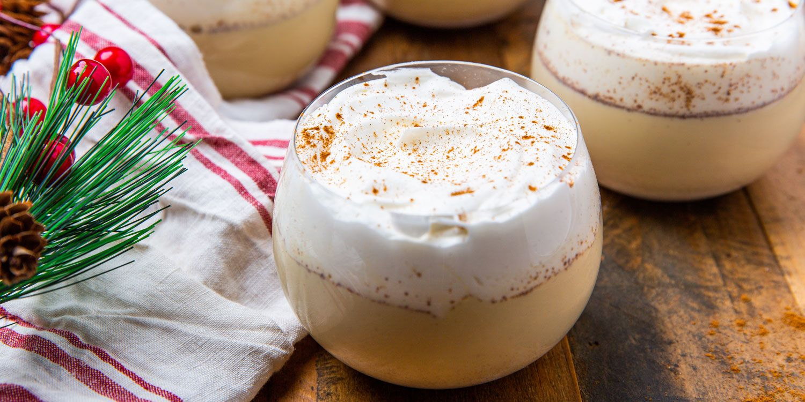

Eggnog

Description
Eggnog, historically also known as a milk punch or an egg milk punch when alcoholic beverages are added, is a rich, chilled, sweetened, dairy-based beverage. It is traditionally made with milk, cream, sugar, egg yolks, and whipped egg whites.
Ingredients
- 4 cups milk
- 1 teaspoon ground cinnamon
- 5 whole cloves
- 2 ½ teaspoons vanilla extract, divided
- 12 large egg yolks
- 1 ½ cups white sugar
- 4 cups light cream
- 2 ½ cups light rum (Optional)
- ½ teaspoon ground nutmeg
Steps
- Combine milk, cinnamon, 1/2 teaspoon vanilla, and cloves in a saucepan over the lowest heat setting; stir and heat for 5 minutes. Increase heat to medium-low and slowly bring to a boil. Remove from the heat.
- Whisk egg yolks in a large bowl until light yellow in color. Add sugar and whisk until light and fluffy.
- Pour some of the hot milk mixture into the egg yolk mixture, whisking quickly to avoid scrambling the eggs. Continue adding hot milk and whisking to combine until all milk is incorporated.
- Pour the mixture back into the saucepan. Cook over medium heat, stirring constantly, until thick, about 3 minutes; do not allow the mixture to boil. Strain to remove cloves and let cool for about 1 hour.
- Stir in cream, rum, remaining 2 teaspoons vanilla, and nutmeg. Refrigerate before serving, 8 hours to overnight.